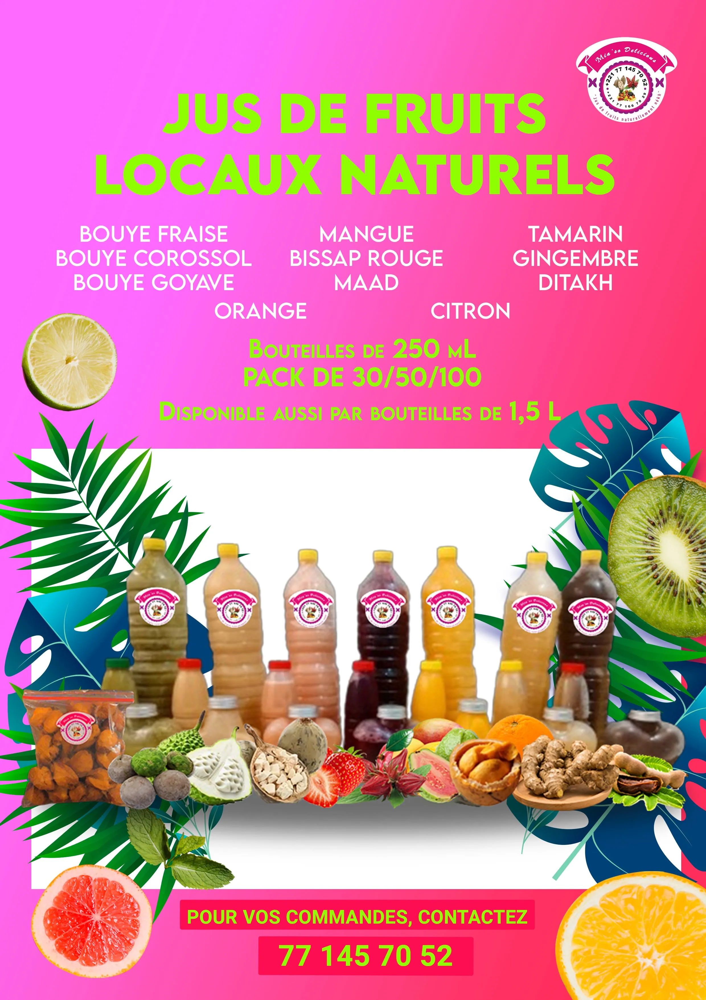

Affiche Mia' so Delicious

Cette affiche colorée et vitaminée promeut une gamme complète de jus de fruits locaux 100% naturels produits au Sénégal. L'entreprise "Mia' so Delicious" (logo visible en haut à droite) propose une alternative saine aux sodas industriels en valorisant les fruits tropicaux locaux.
Palette chromatique explosive
Le fond rose fuchsia éclatant (#FF1493) crée un impact visuel immédiat, évoquant :
- L'énergie et la vitalité
- La jeunesse et la fraîcheur
- La joie tropicale
- Le plaisir gustatif
Ce choix audacieux démarque immédiatement le produit dans un environnement commercial saturé.
Titre principal en vert fluo : "JUS DE FRUITS LOCAUX NATURELS"
Le vert (#00FF00) sur rose crée un contraste maximal tout en évoquant la nature et le naturel. C'est un combo chromatique audacieux mais efficace.
Liste complète des saveurs (en blanc) :
Colonne 1 :
- BOUYE FRAISE
- BOUYE COROSSOL
- BOUYE GOYAVE
Colonne 2 :
- MANGUE
- BISSAP ROUGE
- MAAD
- ORANGE
Colonne 3 :
- TAMARIN
- GINGEMBRE
- DITAKH
- CITRON
Cette liste met en avant des fruits typiquement sénégalais/africains :
- Bouye : Fruit du baobab (pain de singe)
- Bissap : Hibiscus (boisson nationale du Sénégal)
- Maad : Fruit du palmier doum (Saba senegalensis)
- Ditakh : Fruit du détarium
- Tamarin, gingembre, mangue : Classiques tropicaux
Formats disponibles (en vert fluo) :
"Bouteilles de 250 mL
PACK DE 30/50/100"
"Disponible aussi par bouteilles de 1,5 L"
Cette flexibilité permet de cibler :
- Les particuliers (1,5L familial)
- Les revendeurs (packs de 30/50/100)
- Les événements (commandes en gros)
Stratégie commerciale
Sept bouteilles en plastique transparent (format 1,5L) sont alignées, montrant les différentes couleurs naturelles des jus :
- Beige/crème (bouye)
- Marron clair (tamarin/maad)
- Rouge rubis (bissap)
- Orange vif (mangue/orange)
- Jaune doré (citron/gingembre)
- Blanc/gris (détakh)
Chaque bouteille porte l'étiquette circulaire du logo "Mia' so Delicious".
Décoration tropicale luxuriante
Le visuel est enrichi par :
- Fruits frais photographiés : Kiwi, fraise, orange (en tranches), pamplemousse rose
- Feuilles tropicales stylisées : Monstera deliciosa (feuilles découpées vertes et bleues turquoise), feuilles de palmier
- Composition asymétrique : Les éléments naturels encadrent les bouteilles sans les cacher
Cette abondance végétale communique : fraîcheur, nature, origine locale, vitalité.
Call-to-action (en bas, bandeau jaune sur fond rose) :
"POUR VOS COMMANDES, CONTACTEZ"
"77 145 70 52"
Le numéro est affiché en très grande taille, facile à mémoriser ou à photographier.
Logo Mia Jus & Délices
En haut à droite, le logo circulaire présente une silhouette de femme élégante tenant un verre, avec le texte "Mia' so Delicious" et le slogan "Jus de fruits naturellement nekh". Ce positionnement évoque le bien-être, la santé, la féminité.
© 2025 by Frenzy Design